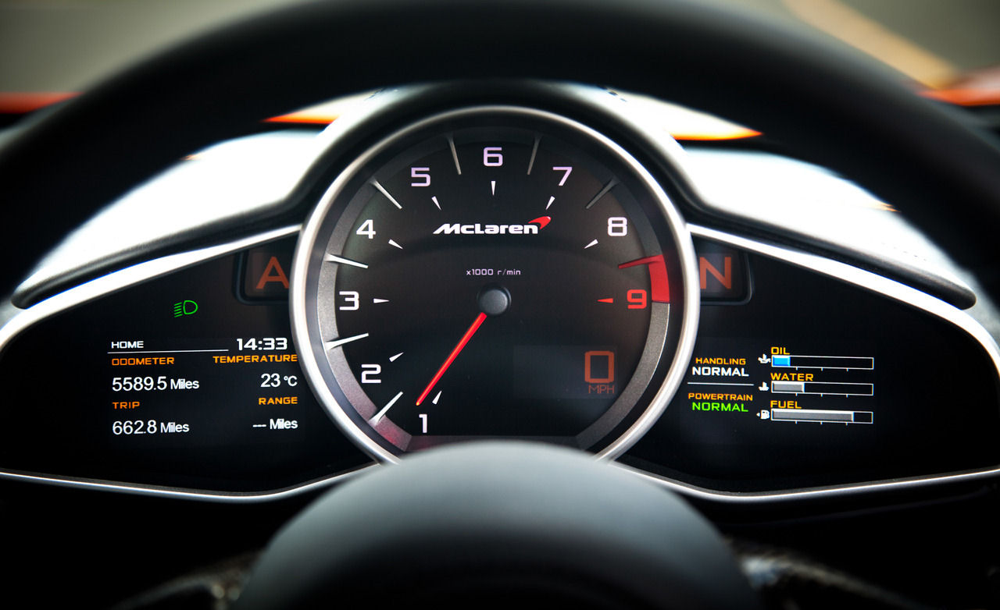
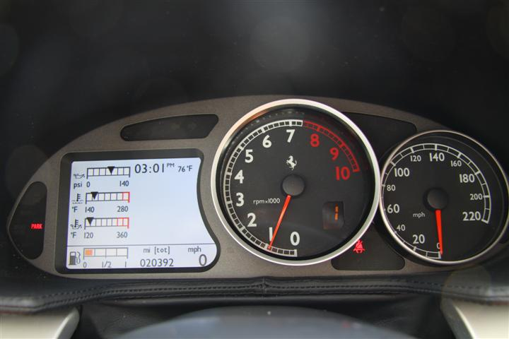
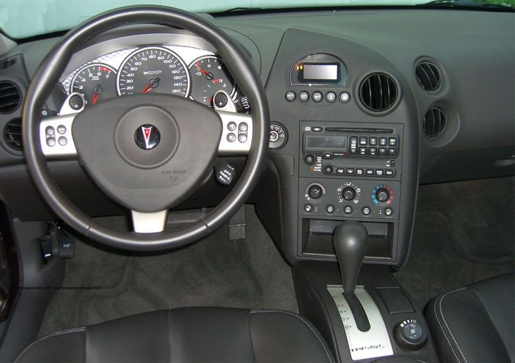
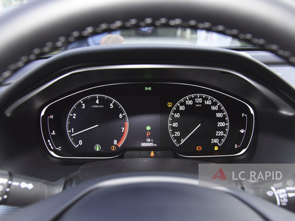
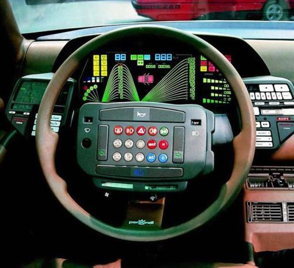
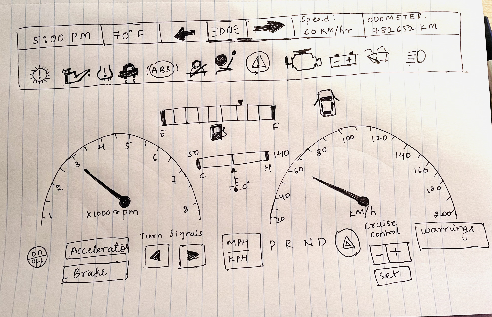

Project 2:The Car Dashboard
Examples of Car Dashboards

Pros
- The speedometer and Tachometer are clearly differentiated. speedometer is digitalised.
- The dashboard is clear and can be understood easily by the user.
Cons
- The letters on top of the dashboard A represents ABS and N stands to show that automatic transmission is in neutral.
Most of the users cannot figure that out just by looking at it.
- Using letters to represent operation confuses the driver.
Example Two

Pros
- The design of dashboard is clear and understandable.
- Digital display shows fuel indicator, odometer, speedometer, time and temperature.
This makes it easier for driver to read.
- All the functions are uniformly placed.
Cons
- On the digital display three bars indicating different functions is not clear.
User cannot understand their operation just by looking at it.
- All three bars representing fuel indication, oil temperature can be represented more clearly.
Example Three

Pros
- The speedometer, Tachometer, and fuel guage are clearly distiguished.
- Overall placement of dashboard works well
Cons
- Units of measurement is not clearly shown.
- warning signals are not precise.
- Too many buttons on the steering wheel. User might not know how to use them properly.
Example Four

Pros
- The design looks basic,clear and simple without any complications.
Cons
- The numbering size should be increased. It does not provide proper view for the driver.
- Placement of fuel indication and oil temperature is not easily noticable. one has to look for it inorder to find out.
Example Five

Cons
- This is bad design for a car dashboard.
- There are lot of buttons on the steering. The driver can press any button while driving unintentionally.
This leads to unnecessary complications.
- The dashboard looks so complicated and nothing is clearly shown. One cannot even point out where the speedometer is.
- This Car dashboard presents exactly how a car dashboard should not be.
Common Features of Car Dashboard
- Car dashboard is control panel which is usually located directly ahead of driver. It displays the functioning and condition of the vehicle.
- A car dashboard typically includes the speedometer, tachometer, odometer, engine coolant temperature gauge,
and fuel gauge, turn indicators, gearshift position indicator, seat belt warning light, parking-brake warning light, and engine-malfunction lights.
- The speedometer tells the driver the speed of vehicle in MPH or KPH.
- Tachometer shows the driver how many rotations the engine is making per minute.
- Odometer shows how many miles the car has traveled in its lifetime.
- Fuel Gauge shows the amount of fuel present in the tank.
- Gear Display shows which gear the car is currently in.
- Turn Signal Indicators flash when turn signals are on;both will flash if we turn on our hazard lights.
- Active System Lights alert us to parts of the vehicle that are activated, such as an open trunk or door.
Rare Features of Car Dashboard
- Most of the drivers does not have complete knowledge of the car dashboard warning light.
One such warning light most users are unaware of is Gas tank locator arrow.
It helps the driver to locate which side of the car is fuel tank located by saving some time for the driver.
- Another rarely used feature is every car has temperature sensor that indicates the exterior temperature.
In most cases, these sensors activate a road temperature warning as there is drop in temperature.
It is indicated using a snowflake on dashboard, letting the driver know that roads might be icy.
- Cruise control is another feature which allows driver to lock the accelerator on a specific speed and take his or her foot off pedal.
It is designed to be on roadways without frequent stops and turns like highways.
- Another feature is night vision. In some vehicles the dashboard screen goes into a night vision mode to show the road ahead of driver in greater detail at night.
- Trip odometer is also least used function.
User interaction
- Accelerator to increase or decrease speed of car.
- Turn signals.
- Headlights.
- Cruise controls.
- The amount of fuel present is reflected in the fuel gauge.
- Seat belt warning signal and other warning signals.
Common Mistakes
- Making the dashboard look complicated trying to make it user friendly.
- User cannot understand all the symbols displayed on dashboard.
- The car door open warning signal does not exactly tell which door is not properly closed.
- Not clearly defining the difference between tachometer and speedometer.
- Usage of the color on dashboard. It plays major role because it might not provide clear understanding, or it might be too distracting for the driver.
Sketch of Car Dashboard

Changes made to Control Interface
- The Speedometer and the Tachometer are clearly separated.This avoids any confusion for the user.
- A digital display at the top is added. It includes Time, Temperature, speed, odometer, turn signals etc.
- All the warning lights will be displayed on the top digital display.
- Two bars are placed between speedometer and tachometer which displays the fuel indication and engine temperature.
- In the bottom, there are interactive buttons which includes cruise control, turn signals, etc.
- The whole point of the desgin is to make the car dashboard usage less complicated, simple and user friendly.
- The (P R N D) gives the driver an idea about the motion of vehicle.